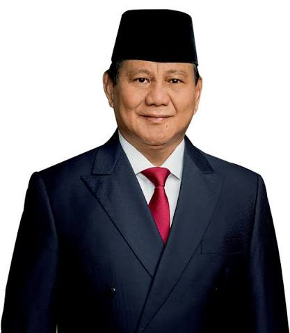

Prabowo Subianto Djojohadikusumo adalah seorang politikus, pengusaha, dan pensiunan perwira militer Indonesia yang menjabat sebagai Presiden Indonesia kedelapan sejak tahun 2024. Sebelumnya, ia menjabat sebagai Menteri Pertahanan ke-26 di bawah Presiden Joko Widodo dari tahun 2019 hingga 2024. Prabowo adalah presiden ketiga Indonesia yang memiliki latar belakang militer setelah Soeharto dan Susilo Bambang Yudhoyono, dan merupakan presiden tertua kedua dalam sejarah Indonesia setelah Soeharto sebagai presiden RI sejak 1968 hingga 1998.